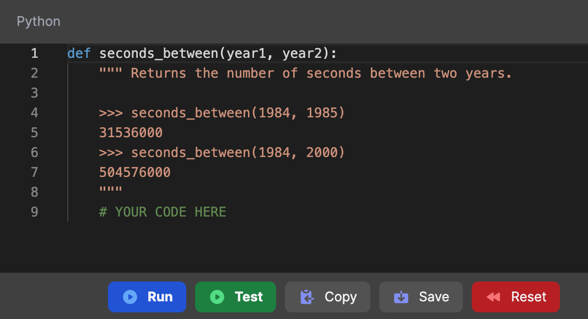
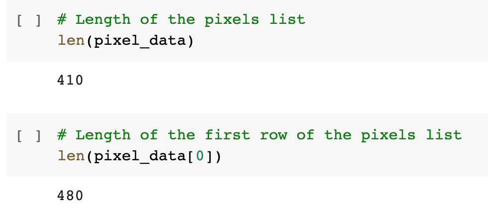

You can complete our coursework entirely in the browser:

Exercises can be coded in embedded Python widgets on CoRise.com
 Projects will be coded in Google CoLab (Browser-based Jupyter notebooks)
...but you may still want a place to play with Python.
Download the latest Python from python.org/downloads.
Start a Python REPL:
$ python3
Python 3.11.0 (v3.11.0:deaf509e8f, Oct 24 2022, 14:43:23)
>>> 2 + 2
4
Run a Python program:
$ python3 file.py
A code editor is a text editor with support for syntax highlighting, linting, refactoring, and other helpful tools.
The two most popular editors for Python:
Learn more about using Python in VS Code
Programs manipulate values.
Each value has a certain data type.
| Data type | Example values |
|---|---|
| Integers | 2 44 -3
|
| Floats | 3.14 4.5 -2.0
|
| Booleans | True False
|
| Strings | '¡hola!' 'its python time!'
|
An expression describes a computation and evaluates to a value.
Some expressions use operators:
18 + 69
6/23
2 * 100
2 ** 100
Many expressions use function calls:
pow(2, 100)
max(50, 300)
min(-1, -300)
A variable binds a name to a value.
| x | = | 7 |
| Name | Value |
The value can be any expression:
| x | = | 1 + 2 * 3 - 4 // 5 |
| Name | Expression |
A variable can be referenced multiple times:
x = 10
y = 3
result1 = x * y
result2 = x + y
A particular name can only be bound to a single value.
my_name = 'Pamela'
my_name = my_name + 'ela'
💬 Will that code error? If not, what will my_name store?
It will not error (similar code in other languages might, however).
The name my_name is now bound to the value 'Pamelaela'.
A function is a sequence of code that performs a particular task and can be easily reused. ♻️
We've already used functions:
abs(-1)
pow(2, 10)
add(18, 69)
mul(60, sub(5, 4))
A function takes in an input (the arguments) and returns an output (the return value).
2, 10 → pow → 1024
Consider this function-less code:
greeting1 = "Hello, Jackson, how are you?";
greeting2 = "Hello, Dr. Biden, how are you?";
greeting3 = "Hello, Stranger, how are you?";
Functions help when code has repetition.
Function parameters/arguments help when repetitive code has variation.
First identify the repetitive parts:
def say_greeting():
return "Hello, how are you?"
Then use parameters for the parts that vary:
def say_greeting(name):
return "Hello, " + name + ", how are you?"
Finally, test it with different arguments:
say_greeting("Jackson")
say_greeting("Dr. Biden")
say_greeting("Stranger")
The most common way to define functions is Python is the def statement.
def <name>(<parameters>):
return <return expression>
Example:
def add(num1, num2):
return num1 + num2
Once defined, we can call it:
add(2, 2)
add(18, 69)
The first line is called the function signature, all lines after are considered the function body.
def <name>(<parameters>): # ← Function signature
return <return expression> # ← Function body
def add(num1, num2): # ← Function signature
return num1 + num2 # ← Function body
The function body can have multiple lines:
def add(num1, num2): # ← Function signature
sum = num1 + num2 # ← Function body
return sum # ← Function body
We can pass in any expressions as arguments.
def add(num1, num2):
return num1 + num2
x = 1
y = 2
add(x, y)
x = 3
add(x * x, x + x)
The return keyword returns a value to whoever calls the function (and exits the function).
def add(num1, num2):
return num1 + num2
sum = add(2, 4)
Reminder: You can use function calls in expressions:
big_sum = add(200, 412) + add(312, 256)
...and nest function calls inside function calls:
huge_sum = add(add(200, 412), add(312, 256))
What's wrong with this code?
def add(num1, num2):
return sum
sum = num1 + num2
sum = add(2, 4)
The code after the return statement will not be executed, that line belongs before the return.
What's wrong with this code?
def add():
return num1 + num2
sum = add(2, 4)
The function body is referring to variables that don't seem to exist. Most likely, they should be parameters in the function signature.
What's wrong with this code?
def add(num1, num2):
sum = num1 + num2
sum = add(2, 4)
The function body does not return any value. However, the code that calls it tries to use the result of the expression. It should have a return statement that returns the sum.